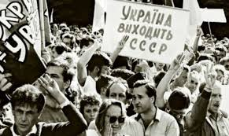
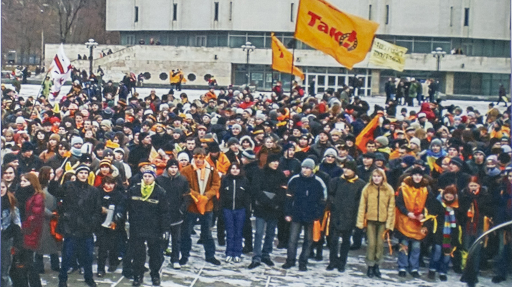

Національно-визвольна війна під проводом Богдана Хмельницького

Національно-визвольна війна під проводом Богдана Хмельницького
Перша світова війна
Перший Голодомор
Другий Голодомор
Друга світова війна
Третій Голодомор
Революція на граніті
Проголошення незалежності України
Помаранчева революція
Революція Гідності
Російсько-українська війна
Повномасштабне вторгнення Росії

Національно-визвольна війна українського народу 1648–1657 років була боротьбою під проводом Богдана Хмельницького проти польського панування. Причинами стали соціальний і національний гніт, обмеження прав козаків та релігійні утиски. Військові успіхи козаків привели до створення Української козацької держави – Гетьманщини. У 1654 році була укладена Переяславська угода з Московією, яка змінила хід подій. Попри здобутки, війна не привела до повної незалежності, а Україна опинилася між Польщею та Московією.

Перша світова війна (1914–1918) була глобальним збройним конфліктом між Антантою (Британія, Франція, Росія) та Центральними державами (Німеччина, Австро-Угорщина, Османська імперія). Вона розпочалася після вбивства ерцгерцога Франца Фердинанда і швидко охопила більшу частину світу. Війна супроводжувалася окопним протистоянням, масовими втратами та застосуванням нової зброї, включаючи танки й хімічну зброю. У 1917 році до війни приєдналися США, що вплинуло на її результат. Закінчилася війна поразкою Центральних держав і підписанням Версальського мирного договору, який змінив карту Європи.

Друга світова війна (1939–1945) була наймасштабнішим збройним конфліктом в історії, що охопив майже весь світ. Вона почалася 1 вересня 1939 року з нападу нацистської Німеччини на Польщу, після чого Велика Британія і Франція оголосили війну Німеччині. Головними сторонами конфлікту були країни Осі (Німеччина, Італія, Японія) та Союзники (СРСР, США, Велика Британія та інші). Війна завершилася капітуляцією Німеччини 8 травня 1945 року та Японії 2 вересня після атомних бомбардувань Хіросіми й Нагасакі. Її наслідками стали мільйони жертв, утворення ООН та початок Холодної війни.

В Україні сталося три масштабні Голодомори у XX столітті: 1921–1923, 1932–1933 та 1946–1947 років. Перший був викликаний наслідками Першої світової війни, революції та посухи, що призвело до масового голоду. Найжахливіший Голодомор 1932–1933 років був штучно організований радянською владою через хлібозаготівельну політику, що призвело до мільйонів смертей українців. Третій голод 1946–1947 років був спричинений післявоєнним виснаженням, репресіями та вилученням продовольства радянською владою. Всі три Голодомори мали катастрофічні наслідки для демографії, культури та національної пам’яті України.

Революція на граніті – це студентська акція протесту в жовтні 1990 року в Києві, що стала першою масовою ненасильницькою демонстрацією за незалежність України. Головною вимогою протестувальників була відмова від підписання нового союзного договору з СРСР, а також проведення демократичних виборів і відставка уряду. Студенти оголосили голодування та розмістилися на площі Жовтневої революції (нині Майдан Незалежності). Влада не змогла силою розігнати протест, і 17 жовтня частину вимог було виконано. Ця революція стала важливим кроком до здобуття Україною незалежності у 1991 році.

24 серпня 1991 року Верховна Рада України ухвалила Акт проголошення незалежності України, що стало відповіддю на загрозу з боку радянського режиму після провалу путчу в Москві. Цей документ офіційно проголосив Україну незалежною демократичною державою. 1 грудня 1991 року на всеукраїнському референдумі понад 90% громадян підтримали незалежність, що підтвердило волю народу. Одночасно на виборах першим президентом незалежної України був обраний Леонід Кравчук. Проголошення незалежності стало ключовим моментом у розпаді СРСР і утворенні суверенної української держави.

Помаранчева революція – це масові мирні протести в Україні наприкінці 2004 року, спричинені фальсифікаціями під час другого туру президентських виборів. Громадяни вийшли на Майдан Незалежності в Києві та інші міста, вимагаючи чесного голосування. Головними суперниками на виборах були Віктор Ющенко (опозиція) і Віктор Янукович (влада), якого ЦВК оголосила переможцем. Під тиском протестів Верховний Суд України визнав результати сфальсифікованими та призначив третій тур, у якому переміг Ющенко. Помаранчева революція стала символом боротьби українців за демократію та прозорі вибори.

Революція Гідності (листопад 2013 – лютий 2014) – масові протести українців проти режиму Віктора Януковича, що розпочалися після його відмови підписати Угоду про асоціацію з ЄС. Спочатку акція, відома як **Євромайдан**, була мирною, але після жорстокого розгону студентів 30 листопада переросла у масштабне повстання. У січні-лютому 2014 року відбулися жорстокі сутички з силовиками, внаслідок яких загинули десятки активістів, відомих як **Небесна Сотня**. 21 лютого Янукович утік з України, а Верховна Рада відновила демократичний курс країни. Революція Гідності стала вирішальним кроком до європейського майбутнього України та спричинила російську агресію.

Російсько-українська війна розпочалася у 2014 році з анексії Криму та агресії на Донбасі. У лютому-березні Росія, використовуючи свої війська та спецслужби, захопила Крим, провела незаконний "референдум" і оголосила його частиною РФ. У квітні 2014 року проросійські бойовики, підтримувані російськими військовими, захопили частину Донецької та Луганської областей, оголосивши там фейкові "республіки". Україна розпочала Антитерористичну операцію (АТО), що переросла у затяжний збройний конфлікт із тисячами жертв. Попри міжнародні санкції та спроби мирних угод (Мінські домовленості), Росія продовжувала підтримувати бойовиків, що стало передумовою для повномасштабного вторгнення у 2022 році.

Повномасштабне вторгнення Росії в Україну розпочалося 24 лютого 2022 року з масованих ракетних ударів та наступу російських військ з різних напрямків. Головними цілями агресора були захоплення Києва, встановлення маріонеткового уряду та знищення української державності. Попри перевагу у силі, українська армія та народ чинили героїчний опір, зірвавши плани блискавичної окупації. Завдяки контрнаступам ЗСУ було звільнено північ України, а згодом Харківщину, Херсонщину та інші території. Війна триває, Україна отримує міжнародну підтримку, а Росія зазнає поразок та ізоляції на світовій арені.